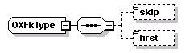

complexType
OXFkType
diagram

namespace
http://www.cisco.com/AXL/API/10.5
children
skip
first
used by
elements
OXPhone/aarNeighborhoodName
OXLine/aarNeighborhoodName
OXSipProfile/acceptAudioCodecPreferences
OXDeviceProfile/alwaysUsePrimeLine
OXPhone/alwaysUsePrimeLine
OXDeviceProfile/alwaysUsePrimeLineForVoiceMessage
OXPhone/alwaysUsePrimeLineForVoiceMessage
OXSipProfile/anonymousCallBlock
OXPhoneLine/audibleMwi
OXPhone/authenticationMode
OXLine/autoAnswer
OXPhone/automatedAlternateRoutingCssName
OXPhone/builtInBridgeStatus
OXTransPattern/calledPartyNumberingPlan
OXTransPattern/calledPartyNumberType
OXSipProfile/callerIdBlock
OXSipProfile/callHoldRingback
OXPhone/callInfoPrivacyStatus
OXDeviceProfile/callInfoPrivacyStatus
OXSipProfile/callingLineIdentification
OXTransPattern/callingLinePresentationBit
OXTransPattern/callingNamePresentationBit
OXTransPattern/callingPartyNumberingPlan
OXTransPattern/callingPartyNumberType
OXCallForwardNoAnswerInt/callingSearchSpaceName
OXCallForwardNotRegistered/callingSearchSpaceName
OXCallForwardNoCoverage/callingSearchSpaceName
OXCallForwardOnFailure/callingSearchSpaceName
OXCallForwardAll/callingSearchSpaceName
OXCallForwardAlternateParty/callingSearchSpaceName
OXCallForwardNoCoverageInt/callingSearchSpaceName
OXCallForwardNotRegisteredInt/callingSearchSpaceName
OXTransPattern/callingSearchSpaceName
OXCallForwardBusy/callingSearchSpaceName
OXCallForwardNoAnswer/callingSearchSpaceName
OXPhone/callingSearchSpaceName
OXCallForwardBusyInt/callingSearchSpaceName
OXTransPattern/callInterceptProfileName
OXLine/callPickupGroupName
OXPhone/certificateOperation
OXLine/cfaCssPolicy
OXPhone/cgpnIngressDN
OXPhone/cgpnTransformationCssName
OXPhone/class
OXDeviceProfile/class
OXPhone/commonDeviceConfigName
OXPhone/commonPhoneConfigName
OXPhone/confidentialAccess/confidentialAccessLevel
OXSipProfile/confidentialAccessLevelHeaders
OXPhone/confidentialAccess/confidentialAccessMode
OXLine/confidentialAccess/confidentialAccessMode
OXTransPattern/connectedLinePresentationBit
OXTransPattern/connectedNamePresentationBit
OXPhoneLine/consecutiveRingSetting
OXSipProfile/cucmVersionInSipHeader
OXLine/defaultActivatedDeviceName
OXPhone/deviceMobilityMode
OXPhone/devicePoolName
OXPhone/deviceTrustMode
OXTransPattern/dialPlanName
OXSipProfile/dialStringInterpretation
OXTransPattern/digitDiscardInstructionName
OXSipProfile/dndControl
OXDeviceProfile/dndOption
OXPhone/dndRingSetting
OXDeviceProfile/dndRingSetting
OXSipProfile/dtmfDbLevel
OXSipProfile/earlyOfferSuppVoiceCall
OXDeviceProfile/emccCallingSearchSpace
OXLine/externalCallControlProfile
OXPhone/featureControlPolicy
OXDeviceProfile/featureControlPolicy
OXSipProfile/gClear
OXPhone/geoLocationFilterName
OXPhone/geoLocationName
OXPhone/joinAcrossLines
OXDeviceProfile/joinAcrossLines
OXPhone/keySize
OXPhone/locationName
OXDeviceProfile/loginUserId
OXPhone/mediaResourceListName
OXPhone/mlppIndicationStatus
OXDeviceProfile/mlppIndicationStatus
OXPhone/mobilityUserIdName
OXPhoneLine/monitoringCssName
OXPhone/mtpPreferedCodec
OXPhoneLine/mwlPolicy
OXPhone/networkHoldMohAudioSourceId
OXLine/networkHoldMohAudioSourceId
OXPhone/networkLocation
OXPhone/outboundCallRollover
OXPhone/packetCaptureMode
OXLine/parkMonForwardNoRetrieveCssName
OXLine/parkMonForwardNoRetrieveIntCssName
OXDirectoryUri/partition
OXPhoneLine/partitionUsage
OXLine/partyEntranceTone
OXTransPattern/patternPrecedence
OXLine/patternPrecedence
OXPhone/phoneServiceDisplay
OXPhone/phoneSuite
OXPhone/phoneTemplateName
OXPhone/preemption
OXDeviceProfile/preemption
OXLine/presenceGroupName
OXPhone/presenceGroupName
OXPhone/primaryPhoneName
OXDeviceProfile/product
OXPhone/product
OXPhone/protocolSide
OXDeviceProfile/protocolSide
OXPhoneLine/recordingFlag
OXPhoneLine/recordingMediaSource
OXPhoneLine/recordingProfileName
OXTransPattern/releaseClause
OXLine/releaseClause
OXPhone/rerouteCallingSearchSpaceName
OXSipProfile/rerouteIncomingRequest
OXSipProfile/resourcePriorityNamespace
OXSipProfile/resourcePriorityNamespaceListName
OXTransPattern/resourcePriorityNamespaceName
OXPhoneLine/ringSetting
OXPhoneLine/ringSettingActivePickupAlert
OXPhone/ringSettingBusyBlfAudibleAlert
OXPhone/ringSettingIdleBlfAudibleAlert
OXPhoneLine/ringSettingIdlePickupAlert
OXTransPattern/routeClass
OXTransPattern/routeFilterName
OXLine/enterpriseAltNum/routePartition
OXLine/e164AltNum/routePartition
OXTransPattern/routePartitionName
OXLine/routePartitionName
OXDirn/routePartitionName
OXBLFDirectedCallPark/directedCallParkDnAndPartition/routePartitionName
OXSipProfile/rsvpOverSip
OXSipProfile/sdpTransparency
OXCallForwardAll/secondaryCallingSearchSpaceName
OXLine/shareLineAppearanceCssName
OXDeviceProfile/singleButtonBarge
OXPhone/singleButtonBarge
OXSipProfile/sipBandwidthModifier
OXSipProfile/sipNormalizationScript
OXPhone/sipProfileName
OXSipProfile/sipRe11XxEnabled
OXSipProfile/sipSessionRefreshMethod
OXPhone/softkeyTemplateName
OXDeviceProfile/softkeyTemplateName
OXPhone/subscribeCallingSearchSpaceName
OXSubscribedService/telecasterServiceName
OXSipProfile/telnetLevel
OXTransPattern/usage
OXLine/usage
OXTransPattern/useCallingPartyPhoneMask
OXSipProfile/userAgentServerHeaderInfo
OXPhone/userHoldMohAudioSourceId
OXDeviceProfile/userHoldMohAudioSourceId
OXLine/userHoldMohAudioSourceId
OXSipProfile/userInfo
OXPhone/userLocale
OXDeviceProfile/userLocale
OXPhone/useTrustedRelayPoint
OXSipProfile/videoCallTrafficClass
OXLine/voiceMailProfileName
OXPhone/wifiHotspotProfile
OXPhone/wirelessLanProfileGroup
complexTypes
OXFkTypeProduct
OXFkTypeProduct_Protocol
source
<
xsd:complexType
name
=
"OXFkType
">
<
xsd:sequence
>
<
xsd:element
name
=
"skip
"
type
=
"xsd:unsignedLong
"
minOccurs
=
"0
"/>
<
xsd:element
name
=
"first
"
type
=
"xsd:unsignedLong
"
minOccurs
=
"0
"/>
</
xsd:sequence
>
</
xsd:complexType
>
element
OXFkType/skip
diagram
type
xsd:unsignedLong
properties
minOcc
0
maxOcc
1
content
simple
source
<
xsd:element
name
=
"skip
"
type
=
"xsd:unsignedLong
"
minOccurs
=
"0
"/>
element
OXFkType/first
diagram
type
xsd:unsignedLong
properties
minOcc
0
maxOcc
1
content
simple
source
<
xsd:element
name
=
"first
"
type
=
"xsd:unsignedLong
"
minOccurs
=
"0
"/>
XML Schema documentation generated by
XMLSpy
Schema Editor
http://www.altova.com/xmlspy